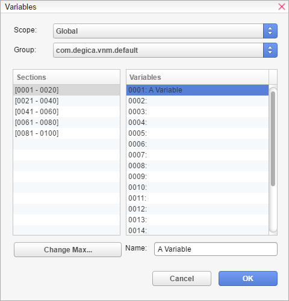
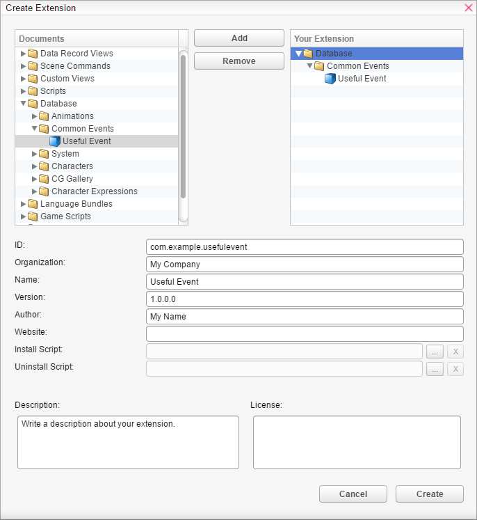

Sharing Content
Visual Novel Maker supports an easy-to-use sharing of scripts, scenes, database entries and even assets via Extensions. However, if you think about sharing, it is important that you learn about so called Groups first.
In VN Maker, many game objects such as pictures or texts on screen are associated with a Number/ID like you can see here:
With that command we are showing a picture on screen with the number 5. The number 5 is now associated with our picture on screen. You can imagine this like we are giving the picture the name "5". So if we want to animate or move that picture to another position, we use the number 5 to tell VN Maker which picture we mean. So if we want to display more than one picture on screen, we have to use a different number for each one so we can distinguish between them. That kind of number-system is used in VN Maker not only for pictures but also for texts, backgrounds, videos, message areas, hotspots and image-maps.
The problem with sharing is that, since simple numbers like that are not really unique, if you share a cool and reusable gender-selection, it maybe uses picture or text numbers which are already in use by other pictures which results in bugs. To avoid that frustration, Groups come into play.
On the screenshot above you can see "@default" before the number, which is the current group that picture should belong too. You can click on it to change the group for that picture. A group itself is just a unique name e.g. "com.degica.vnm.bj" or "peter.usefulstuff.cool-gender-selection" and acts as a group for variables and game object numbers. All groups are independent from each other which means if you show a picture with the number 5 of group "peter.usefulstuff.cool-gender-selection" and then another picture with the number 5 of domain "com.degica.vnm.bj", both pictures will be displayed at the same time and there will be no collisions/bugs since they are in different groups. It is the same with variables as you can see on the following screenshot:.

For Variables, groups are only available for global and persistent variables since local variables are already bound to a unique scene/common-event. So with groups you can easily share your content e.g. a cool gender-selection and other people can use it in their projects without any collisions.. You just have to put all your picture numbers and global variables under your own unique group and thats it.
How to use Groups
The best thing about Groups is that you don't have to worry about anything. By default, all your game objects and variables are part of the "default" group. If you have any extensions installed, you maybe can select other groups as well to get access to the game objects and variables from a certain extension if necessary. If you want to share your content, you have to use the Create Extension Wizard. During the export, the "default"group will be replaced with your own unique group which is the ID you have choosen in the Create Extension Wizard.

In the above example, the ID "com.example.usefulevent" will be used as your unique group name. You can use any kind of name you want but it is recommended to follow a domain-like pattern.